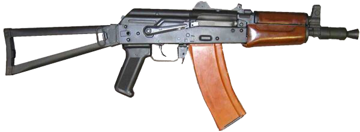
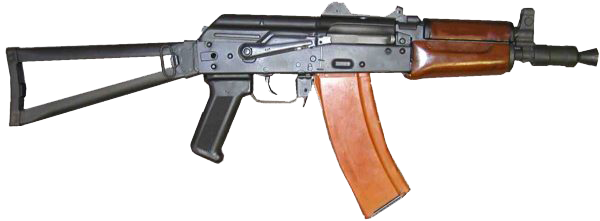

Гаряча лінія 72 ОМБр:
Гаряча лінія 72 ОМБр в Telegram: 72 ОМБр

Гаряча лінія 72 ОМБр:
Гаряча лінія 72 ОМБр в Telegram: 72 ОМБр

Штурмова гвинтівка(ШГ, англ. assault rifle) — це вид стрілецької зброї, а саме це індивідуальна автоматична вогнепальна зброя, що забезпечує ведення автоматичної та одиночної стрільби. Її основне призначення - це ураження живої сили супротивника в ближньому бою та середніх дистанціх.
Окрім класичної схеми компонування ШГ, є також булпап.
Булпап(англ. bullpup) - схема компонування ШГ, за якої ударно-спусковий механізм та магазин розташовані в прикладі позаду спускового гачка.
 

Калібр: 5,45
Набій: 5,45×39мм
Довжина: АК-74 - 943мм, АКС-74У - 735мм
Довжина стволу: АК-74 - 415мм, АКС-74У - 210мм
Вага з порожнім магазином: АК-74 - 3,3кг, АКС-74У - 2,7кг
Вага з зарядженим магазином: АК-74 - 3,6кг, АКС-74У - 3кг
Місткість магазину: 30 набоїв
Темп стрільби: АК-74 - 600п/хв, АКС-74У - 650-700п/хв
АК-74 або ж автомат Калашникова 74 - це подальший розвиток ШГ АКМ, його розробка була пов'язана з
переходом на калібр 5,45. Основна його відмінність від АКМу — калібр і новий дульний компенсатор,
завдяки чому зросла кучність і точність стрільби. Пізніше ШГ модернізували і випустили під назвою
АК-74М. Але до модернізації був розроблений АКС-74У, що відрізнявся меншими розмірами через складний
приклад і вкорочений ствол.
Неповне розбирання ШГ проводиться для чищення та змащення в наступному порядку:
1 крок - відділення магазину та перевірка відсутності патрона в патроннику,
2 крок - вийняти пенал із прикладу,
3 крок - відділення шомпола,
4 крок - від'єднати дульне гальмо-компенсатор,
5 крок - відділення кришки ствольної коробки,
6 крок - відділення зворотного механізму,
7 крок - відділення затворної рами із затвором,
8 крок - відділення затвора від затворної рами,
9 крок - відділення газової трубки зі ствольною накладкою.
Складання після неповного розбирання проводиться у зворотному порядку.
Калібр: 7.62
Набій: 7,62×39мм
Довжина: 870мм
Довжина стволу: 415мм
Вага з порожнім магазином: 3,14кг
Вага з зарядженим магазином: 3,8кг
Місткість магазину: 30 набоїв
Темп стрільби: 600 п/хв
АКМ або ж автомат Калашникова модернізований - це подальший розвиток, модернізація, ШГ АК(АК-47).
Серед змін можна виділити: збільшення прицільної дальністі стрільби, нова ствольна коробка, змінення
розташування прикладу, доданий сповільнювач спрацьовування курка, новий дульний компенсатор.
Неповне розбирання ШГ проводиться для чищення та змащення в наступному порядку:
1 крок - відділення магазину та перевірка відсутності патрона в патроннику,
2 крок - вийняти пенал із прикладу,
3 крок - відділення шомпола,
4 крок - відділення кришки ствольної коробки,
5 крок - відділення зворотного механізму,
6 крок - відділення затворної рами із затвором,
7 крок - відділення затвора від затворної рами,
8 крок - відділення газової трубки зі ствольною накладкою.
Складання після неповного розбирання проводиться у зворотному порядку.
Калібр: 5,45
Набій: 5,45×39мм
Довжина: 712мм
Довжина стволу: 415мм
Вага з порожнім магазином: 3,2кг
Вага з зарядженим магазином: 3,8кг
Місткість магазину: 30 набоїв
Темп стрільби: 650-700 п/хв
Вулкан-М або Малюк — це українська переробка ШГ АК за компонуванням булпап. ШГ обладнаний прицільною планкою Пікатіні на ствольній коробці, новою пістолетною рукояткою, важелем засувки магазина позаду спускового гачка і кнопкою запобіжника над спусковою скобою. Було внесено низку змін в конструкцію ствола, газового поршня, ствольної коробки, рами затвора й ударно-спускового механізму.